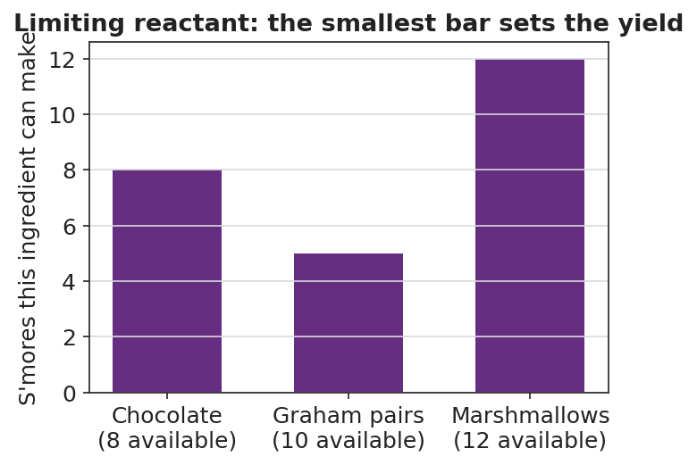

01 Phenomenon
A campfire is burning steadily. A tall pile of dry wood sits right next to it, and the fire is out in the open air — there is plenty of air all around it. Yet the flames shrink and die, leaving glowing coals and a stack of unburned wood. Wood does not burn by itself; it burns by reacting with oxygen in a fixed ratio. When the oxygen reaching the flame cannot keep up, the reaction stops — no matter how much wood is left.
02 Driving question
Why does a campfire go out even when there is still wood and air left — and how does a balanced equation let us predict exactly how much product a reaction can make?
03 Notice & wonder
| I notice… | I wonder… |
|---|---|
Turn & Talk #1: In the sandwich Do Now (2 bread + 1 cheese per sandwich, with 10 bread and 8 cheese), you could only make 5 sandwiches even though you had 8 cheese. In one sentence, what is the campfire’s version of “running out of bread”?
04 Initial model
Before your teacher names the process, use this real balanced equation:
Mg + 2 HCl → MgCl₂ + H₂
The coefficients are the recipe. Suppose you fully react 0.50 mol of Mg.
What is the mole ratio of Mg to H₂ from the coefficients? ______ : ______
How many moles of H₂ should form? Show your one-step setup.
0.50 mol Mg × ( ______ mol H₂ / ______ mol Mg ) = ______ mol H₂
- How many moles of HCl are required for that 0.50 mol Mg? (Watch the coefficient on HCl.)
0.50 mol Mg × ( ______ mol HCl / ______ mol Mg ) = ______ mol HCl
05 Investigate
Use the balanced equation Mg + 2 HCl → MgCl₂ + H₂ for all of Part 1 and Part 2. Molar masses (from the Periodic Table): Mg = 24.3, HCl = 36.5, MgCl₂ = 95.3, H₂ = 2.0 g/mol.
Part 1 — ABCs: S’mores stoichiometry (predict before you calculate)
Treat this recipe like a balanced equation: 1 chocolate + 2 graham-halves + 1 marshmallow → 1 s’more. Your bag holds 8 chocolate, 10 graham-halves, 12 marshmallows.
Build as many complete s’mores as you can. How many did you make? ______
Which ingredient ran out first? ______________ Which are left over, and how many of each? ______________
Look at
figures/limiting_reactant_smores.png. Each bar shows how many s’mores that ingredient could make on its own. Which bar is shortest, and what does the shortest bar tell you?

Part 2 — Mole-mole, mole-mass, and mass-mass
Problem A — Mole-mole. Starting from 1.0 mol Mg:
mol H₂ = 1.0 mol Mg × ( ______ / ______ ) = ______ mol H₂ mol HCl = 1.0 mol Mg × ( ______ / ______ ) = ______ mol HCl
Problem B — Mole-mass. Starting from 1.0 mol Mg, what mass of MgCl₂ forms? Use the mole ratio, then the molar mass.
1.0 mol Mg × ( ___ mol MgCl₂ / ___ mol Mg ) × ( ___ g MgCl₂ / 1 mol MgCl₂ ) = ______ g MgCl₂
Problem C — Mass-mass. A ribbon of 4.86 g Mg reacts completely. What mass of H₂ gas is produced? Fill in every box of the road map.
4.86 g Mg × ( 1 mol Mg / ___ g ) × ( ___ mol H₂ / ___ mol Mg ) × ( ___ g H₂ / 1 mol H₂ ) = ______ g H₂
Part 3 — Limiting reactant (qualitative)
In the Mg + HCl micro-lab, a small ribbon of Mg is dropped into a test tube of excess HCl. The bubbling fizzes hard, then stops — the metal disappears completely while liquid acid still remains.
Which reactant ran out first (the limiting reactant)? ______________
Which reactant was left over (in excess)? ______________
Why did the bubbling stop, in one sentence?
06 Make it make sense
Use the balanced equation Mg + 2 HCl → MgCl₂ + H₂ and molar masses Mg = 24.3, HCl = 36.5, MgCl₂ = 95.3, H₂ = 2.0 g/mol. These are the same calculations you practiced in the Investigation — confirm your work here.
1. Mole-mole. Starting from 1.0 mol Mg, how many moles of H₂ form, and how many moles of HCl are required? Show both setups.
mol H₂ = _______________________________________________ mol HCl = _______________________________________________
2. Mole-mass. Starting from 1.0 mol Mg, what mass of MgCl₂ forms? Show the full chain.
3. Mass-mass. A ribbon of 4.86 g Mg reacts completely. What mass of H₂ gas is produced? Show grams → moles → moles → grams.
07 Key vocabulary
- stoichiometry
- the use of a balanced chemical equation to calculate how much of each reactant is needed and how much of each product forms; every stoichiometry problem follows the path grams → moles → (mole ratio) → moles → grams
- mole ratio
- the ratio of the coefficients of any two substances in a balanced equation; it is the bridge that converts moles of one substance to moles of another (e.g., in `Mg + 2 HCl → MgCl₂ + H₂` the HCl : Mg mole ratio is 2 : 1)
- limiting reactant
- the reactant that is completely used up first in a reaction, capping how much product can form; the other reactant, present in more than the ratio requires, is left over as the *excess* reactant
Use each term in a sentence about today’s investigation. Do not copy the definition — describe something you actually did, observed, or calculated.
stoichiometry: _______________________________________________ _______________________________________________
mole ratio: _______________________________________________ _______________________________________________
limiting reactant: _______________________________________________ _______________________________________________
08 Revise your model
Return to your Initial Model (the 0.50 mol Mg work). Add vocabulary labels:
Draw a box around the conversion factor that came from the coefficients of the balanced equation. Label it “mole ratio.”
Label the whole grams-to-grams or mole-to-mole process with the word “stoichiometry.”
Imagine you drop a tiny ribbon of Mg into a huge excess of HCl. Which reactant is the limiting reactant? ______________
Then finish this Because / But / So sentence about the campfire:
A campfire goes out even though dry wood is still stacked right next to it because __________________________________________, but __________________________________________, so __________________________________________.
09 Exit ticket
Use the combustion of methane: CH₄ + 2 O₂ → CO₂ + 2 H₂O. Molar masses: CH₄ = 16.0, O₂ = 32.0, CO₂ = 44.0 g/mol.
(a) Mole-mole: If 3.0 mol of CH₄ burns completely, how many moles of O₂ are required? Show the mole ratio you used.
(b) Mass-mole: If 8.0 g of CH₄ burns completely, how many moles of CO₂ form? Show the grams → moles → moles chain.
(c) In one sentence, explain why a flame goes out when the oxygen around it is used up, even if unburned fuel remains. Use the term limiting reactant.
10 Explore further
- S'mores stoichiometry (ABCs opener): Treat the recipe `1 chocolate + 2 graham-halves + 1 marshmallow → 1 s'more` as a balanced equation. Give each group a bag with a deliberately mismatched count (e.g., 8 chocolate, 10 graham-halves, 12 marshmallows). Students assemble as many complete s'mores as possible, record what runs out first and what is left over, then connect "ran out first" to limiting reactant and "left over" to excess. Connect to the bar chart in `figures/limiting_reactant_smores.png`.
- Limiting-reactant micro-lab (Mg + HCl): Drop a measured ribbon of magnesium into excess hydrochloric acid in a test tube. The reaction `Mg + 2 HCl → MgCl₂ + H₂` fizzes vigorously and then stops — the Mg disappears entirely while acid remains, so Mg is the limiting reactant. Students measure the mass of Mg, then *calculate* the mass of H₂ gas predicted to be released (mass → mole → mole → mass). Qualitative observation: bubbling stops when the metal is gone, not when the acid is gone.
- Particle-diagram reading: Students interpret `figures/conservation_of_atoms.png` to verify that the number of each kind of atom is identical on both sides of `2 H₂ + O₂ → 2 H₂O` — the visual proof that mass is conserved and that coefficients (not subscripts alone) set the reacting ratio.